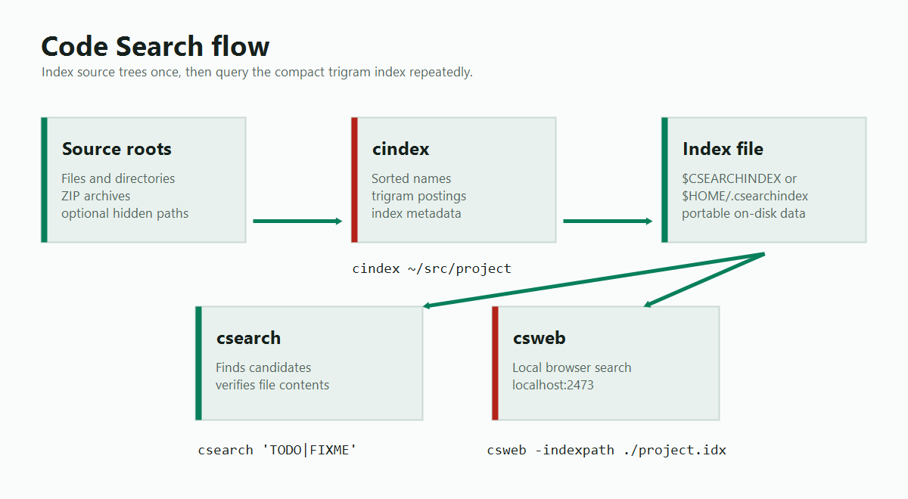

Indexed source search with RE2 regular expressions.
This fork keeps the original Code Search command-line tools usable on
current Go releases and adds practical indexing, Windows, and search
workflow fixes.
git clone https://github.com/amcrypto-jp/codesearch
cd codesearch
go install ./cmd/...
cindex ~/src/project
csearch 'func main'
What This Fork Adds
The module path stays compatible with the original codebase, while the
repository URL and documentation now point at the maintained fork.
Windows-safe index replacement and mmap cleanup
Reentrant posting-list sorting
Configurable index paths for command-line and web tools
Hidden-file, symlink, ZIP, exclusion, and file-list controls
Search limits, NUL-separated file output, and unindexed-file search
Strict-by-default invalid UTF-8 handling with opt-in tolerance
How It Works
Build once, search repeatedly.
`cindex` records roots and trigram postings. `csearch` uses the index
to identify candidate files, then opens those files to verify the RE2
match. `csweb` reads the same index for browser-based exploration.

Indexing and search flow used by the command-line and web tools.
Command Reference
Four tools, one index.
The default index file is `$CSEARCHINDEX`, or `$HOME/.csearchindex`
when `$CSEARCHINDEX` is unset. `cindex`, `csearch`, and `csweb` also
accept `-indexpath FILE`.
cindex
Creates or updates the trigram index.
cindex [options] [path...]
-reset discards the existing index.
-list prints indexed roots.
-check validates the index format.
-exclude FILE reads exclusion patterns.
-filelist FILE reads paths to index, one per line.
-includehidden indexes dot-files and dot-directories except VCS directories.
-follow-symlinks follows symlinked files and directories under their symlink paths.
-zip indexes content inside ZIP files.
-logskip logs why files are skipped.
-stats prints index size statistics.
csearch
Searches indexed files and verifies matches against file contents.
csearch [options] regexp
-f REGEXP searches only matching file names.
-i performs case-insensitive search.
-n prints line numbers.
-l -0 prints matching file names separated by NUL bytes.
-B N, -A N, and -C N print context.
-m N stops after N total matches.
-M N stops after N matches per file.
-brute searches every indexed file.
-all also walks indexed roots to search unindexed regular files.
-includehidden includes hidden files during -all searches.
cgrep
Greps explicit files or standard input with the same regexp engine.
cgrep [options] regexp [file...]
-i performs case-insensitive search.
-n prints line numbers.
-h suppresses file name prefixes.
-l -0 prints matching file names separated by NUL bytes.
-c prints match counts.
-v prints non-matching lines.
-B N, -A N, and -C N print context.
csweb
Starts a local web UI backed by the same index file.
csweb -indexpath /tmp/project.index
Open http://localhost:2473 after the server starts.
Text Detection
By default `cindex` skips hidden paths, backup names, VCS
directories, symlinks, binary files, invalid UTF-8, very long files,
very long lines, and files with too many distinct trigrams.
-maxfilelen N skips files larger than N bytes.
-maxlinelen N skips files with a line longer than N bytes.
-maxtrigrams N skips files with more than N distinct trigrams.
-maxinvalidutf8ratio R permits a limited invalid UTF-8 byte-pair ratio.
Pattern Files
Share exclusions across indexing and search.
Pattern files used by `-exclude` contain one filepath pattern per line.
Blank lines and lines beginning with `#` are ignored.
vendor
*.min.js
generated/*
third_party/*
Patterns without path separators match a file or directory base name.
Patterns containing path separators match the slash-separated path.
This fork includes fixes and command-line features derived from
long-running community forks, including work by Manpreet Singh,
Patrick Mezard, Benoit Mortgat, and Macoy Madson.